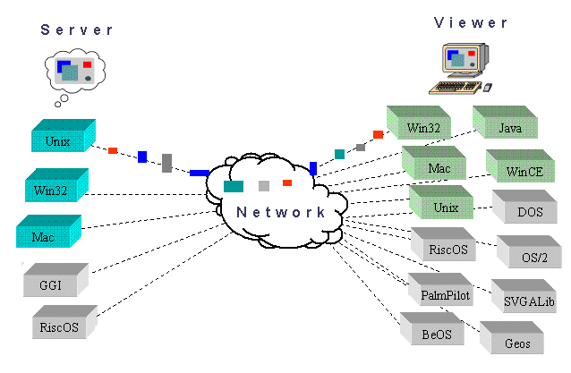

|
VNC stands for Virtual Network Computing. It is remote
control software which allows you to view and interact with one computer
(the "server") using a simple program (the "viewer") on another
computer anywhere on the Internet. The two computers don't even have
to be the same type, so for example you can use VNC to view an
office Linux machine on your Windows PC at home.
VNC is freely and publicly
available and is in widespread active use by millions throughout
industry, academia and privately.
You can download a copy of VNC here.

|